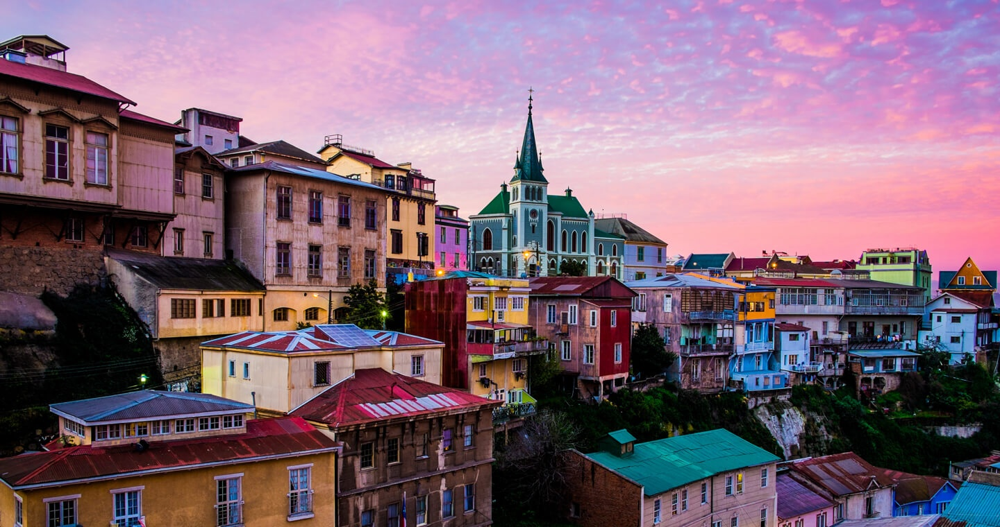
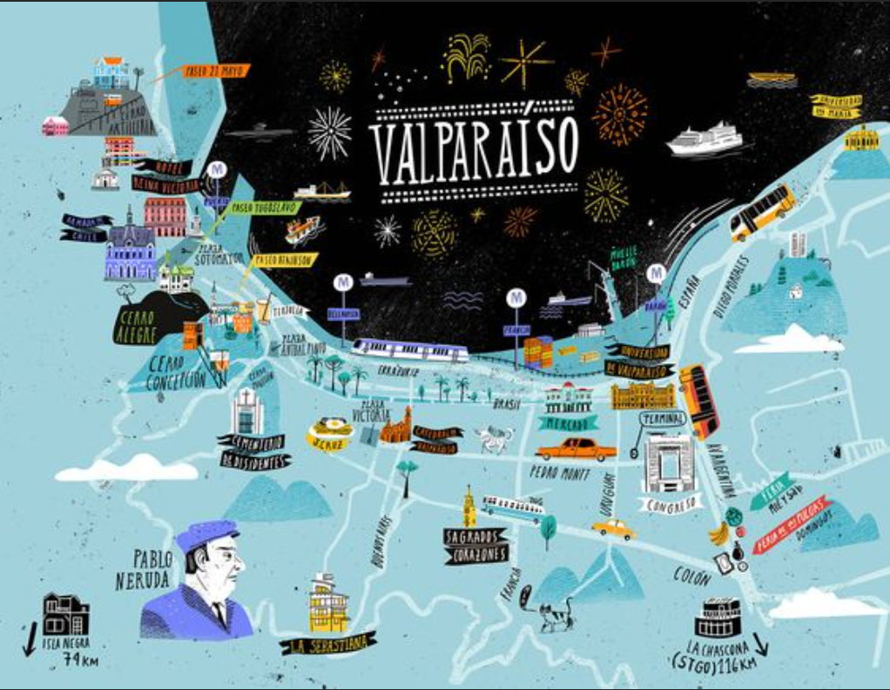

Primer destino: Valparaiso
- Bohemia y colorida. Valparaíso te invita a descubrir siempre un nuevo decorado urbano, una interesante galería de arte o un rincón gastronómico, entre sus laberínticos cerros que han sido inspiración de poetas y escritores.
- Cautívate con la loca arquitectura de la Ciudad Patrimonio de la Humanidad. Recorre a pie sus estrechas calles, infinitas escaleras, históricos ascensores y sus múltiples miradores. Contágiate de la alegría de sus carnavales y espectacular show de juegos artificiales que despiden desde el mar las Fiestas de Fin de Año.
- No olvides visitar su puerto y caletas, fiel retrato de la idiosincrasia chilena. ¡Sorpréndete con el mercado de productos del mar recién extraídos y la extrovertida labia de los pescadores!
- La Joya del Pacífico, como también es conocida la ciudad, es sede del Poder Legislativo de la nación y casa de la Armada Chilena. ¡Conoce sus impresionantes edificios y empápate de nuestra historia marítima!
